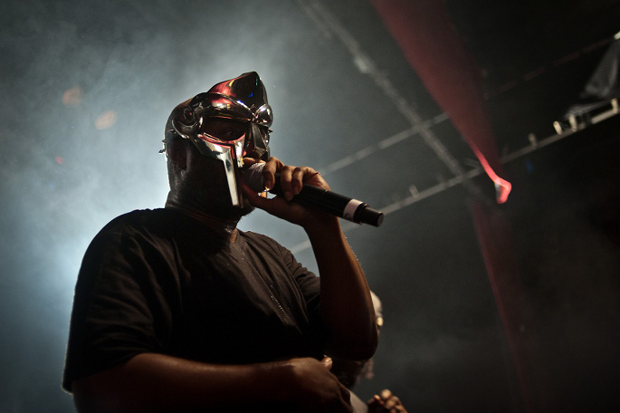

A Rapper Is Born
Lil' Neuron Takes His First Few Chaotic, Rectified Breaths
Three verses in and I realized I was in way over my head. The rap game is an endurance sport, and the ones at the top started running years ago. But as a former collegiate pole vaulter, I never cared much for seeing how fast I could run circle. Much more to fun to see how high you can fling yourself with a flexible stick. So I quickly threw away my dreams of becoming a professional rapper, and decided to see how high I could jump using a recurrent neural network, some GPUs, and a whole lot of data.
Neuron's Humble Beginnings
Reflecting on my lousy, incoherent rhymes made me realize that while I didn't have the neural circuitry to think of related, similar-sounding words, my laptop definitely did. So I began experimenting with rhyming dictionaries, and specifically the Python library pronouncing pronouncing.
pronouncing uses a dataset called the CMU pronouncing dictionary to translate English words into their component phonemes, and stresses. In doing so, it can generate simple rhymes for words.
import pronouncing
pronouncing.rhymes("recurrent")
[u'concurrent',
u'current',
u'intercurrent',
u"weren't",
u'concurrent',
u'current',
u'intercurrent',
u"weren't"]
I was immediately enthralled. My first thought was how I was going to cheat the entire rap community and generate my own rap lyrics using rhymes from pronouncing.
The library's built in rhyming engine only generates simple "exact" rhymes, matching the last phoneme of two words exactly. However, if I was going to compete with a real rapper like MF Doom, I would need to figure out how to generate multisyllabic and assonance rhymes, such as these Doom lyrics:
Everything that glitters ain't fishscale
Lemme think, don't let her faint get Ishmael
A shot of Jack got her back it's not an act stack
Forgot about the cackalack, holla back, clack clack blocka
Villainy, feel him in ya heart chakra chart toppa
Start shit stoppa be a smart shoppa"
He basically rhymes entire lines with each other.
And there was no way I could hard-code double-entendres:
Hey you, don't touch the mic like it's AIDS on it
It's like the end to the means
Fucked type of message that sends to the fiends
That's why he brings his own needles
And get more cheese than Doritos, Cheetos or Fritos
Slip like Freudian
Your first and last step to playing yourself like accordion
MF DOOM

Time to Venture Into the Deep End
I soon realized that this rapping thing was a bit more difficult than a simple rule-based Python program. However, I also knew that most rappers live in a common world, rap about similar things, and all learn their skills from other rappers who came before them. More importantly, all their learning material is publicly available. Sites like Genius host every rap lyric I would every want to study online.
Instead of augmenting my own poor rap skills, I could usher a new rapper into the world, one without all the distractions of modern life. This young upstart rapper could run on electricity instead of Chipotle and Starbucks, and take advantage of the latest advances in parallel computing to learn from the best in a fraction of the time it would take a normal rapper.
A quick Google search confirmed that while a few brave souls had started this undertaking, none had been thus far been able to generate truly original compositions that could make it anywhere far in the rap game. Eric Malmi et al. created DeepBeat which uses a feed-forward neural network to find the best existing lines in a rap corpus that rhyme with a given line, and several other online rap lyric generators (https://www.rappad.co/songs-about, http://www.song-lyrics-generator.org.uk/, http://www.rhymebuster.com/rapgenerator, and http://rapscript.net/) which also combine existing lines from a corpus.
Recent successes in generative natural language processing using deep, character-based recurrent neural networks led me to believe that the stars are finally aligned for a new species of rapper to emerge from the murky shores of AI-research. So, armed with Andrej Karpathy's Char-RNN as a starting point, I began to assemble all the ingredients necessary to bequeath Lil' Neuron into existence.
Learning How to Rap
In order to create a rapper, one should emulate existing rappers, and specifically how they learn how to rap. Let's dive into the mind of a young up-and-coming rapper.
This little flesh-and-blood rapper, let's call her Fleshy, starts rapping with her friends after school. She already knows how to speak English, and she's grown up listening to almost exclusively hip-hop, funk, and soul music. She understands the meaning of words first in a normal language-context, and second in a rap-context. But the former informs and gives rise to the latter. So very common words like "I", "you", "the", "have", and "do" all mean pretty much the exact same thing in a rap context. But some less common words might have their meaning shifted, like "spit" and "ill".
When Fleshy learns how to rap, she starts with a base of knowledge about the English language, and adds on the nuances of rap lingo. This is much easier than starting from scratch.
She then learns common words phrases that sound good together and tend to appear in sequence, like "You know my steelo", or anything that ends in "-y" with "Hennesey", like "baby", "enemy", or "me".
Once she has this base, she can start to come up with more original and complex raps of her own, until one day she's producing raps like MF Doom and B.I.G.
"Artificial" Learning
To emulate this style of learning, we can use an idea from the Natural Language Processing community called a language model. The goal of a language model is to teach a machine to understand a body of text, called a corpus, well enough so that it can generate new text that is indistinguishable from a random sampling of text from the corpus. In other words, if the language model is really excellent, then a casual reader wouldn't be able to tell the difference between a piece of text from the language model and a piece of text from the corpus.
We want to build a language model for rap. And the beauty of rap is that while it can get extremely complex using long multisyllabic rhymes and double-entendres, the content does not represent all the possible topics and ideas of the full English language. Language models built to emulate a generic corpus like some newspaper archives have to deal endless varieties of topics. The constrainted nature of rap (to the typical refrains of Sex, Money, Drugs, Success, Fame, the Rap Game Itself, Life on the Streets, etc) massively helps us out.
There are a few more points, related to emulating human learning, to mention before diving into the architecture.
- Providing more prior information is always helpful to reduce the amount of data required to learn well. This means that providing both the words themselves and the associated phonemes and stresses will help out a ton with learning how to rhyme.
- Ideally we'd want to encode a generic English language model before learning our "rap" language model. I toyed around with the idea of first encoding words into vectors a la Google Word2Vec before plugging them into the deep learning model. However, I ran into the problem of dealing with unknown words. It's unclear how to encode words like "lil" and "finna", which mean very clear, specific things in rap, but won't appear at all in the corpuses used to make word vectors. One could imagine some way of using the intent of the original Word2Vec algorithm to initialize these words according to some sampling of the words they appear next to, but I decided to rain check this complexity for future versions. Instead, I just learn an embedding for words on the fly as the model trains.
- We want to build a rapper that knows the difference between Jay Z lyrics and Gucci Mane lyrics. The model would be terrible if it tried to be the average of every rapper out there. So we need to try to encode both the lyrics themselves and the rapper who wrote them.
- Elaborating on the theme of encoding as much prior information as possible, we can also use Spotify's API to generate a network of related rappers, and encode this information into the model as well.
- We want Lil Neuron to have his own style, and a sense of self, so for fun let's teach him some other sources of literature, like Walt Whitman, Carl Sagan, Isaac Asimov, and Andrew Ng.
A Combined Feature-based and Character-based RNN
Sourcing the Data
Training the Model
Generating New Lyrics